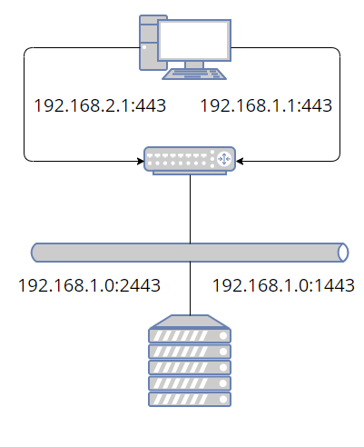
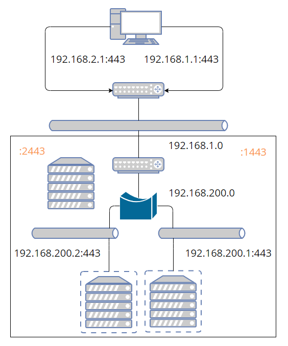
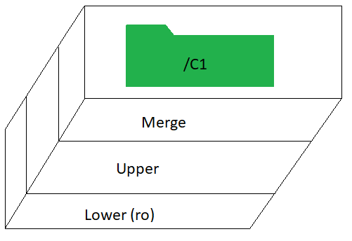
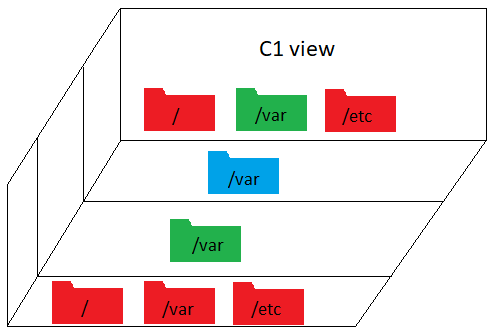
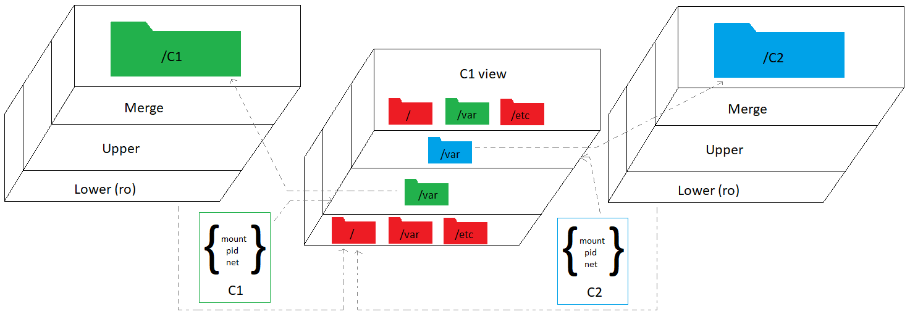
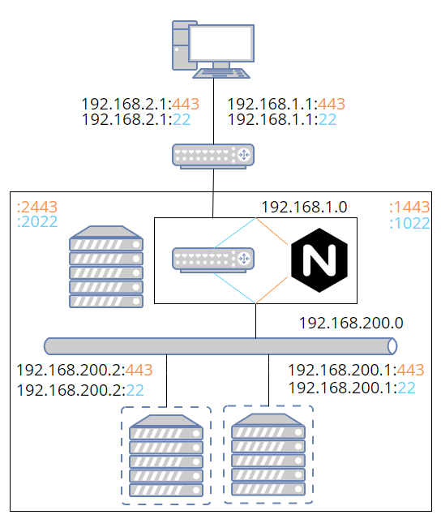

WSL Development EnvironmentTL;DR Gist with my source. Network NamespaceI wrote a brief post about setting up multiple WSL instances, only to later discover that every instance is on the same virtual adapter. In other words, completely separate OS instances live in the same network namespace. Assigning them different IPs accomplishes nothing since all IPs are shared by every instance (all bound to the same device). So I had to learn how to create my own network namespaces. Fortunately, there are lots of examples of how to do this. First we'll need an IP per development instance on the Windows side so that we can treat each instance as separate as viewed from Windows. The IP octet will be the same as the instance number. There might be a way to put evenything on the last octet, but I'm not a networking expert, and this was the easiest way to get things working. It's also easy to understand how IPs are mapped from Windows to Linux with this scheme: 192.168.xxx.1 (Windows) -> 192.168.1.0 (Linux). There will need to be a single static IP on the Linux side. So on Windows, add a couple of IPs for a couple of development instances. netsh.exe interface ip add address "vEthernet (WSL)" 192.168.1.1 255.255.255.0 netsh.exe interface ip add address "vEthernet (WSL)" 192.168.2.1 255.255.255.0 And then on Linux, a single IP: ip addr add "192.168.1.0/16" dev eth0 Next we need to map any ports we'll be using. This is so I can use the hostname (e.g. dev1.rocky and dev2.rocky) instead of needing to remember port numbers (e.g. dev.rocky:443 and dev.rocky:1443) since you can have a hostname associated to each unique IP. The ports can be mapped however you like. I found it easiest to add 1000. If you're using a lot of instances, this scheme will obviously eventually run into issues. On the Windows side, you use netsh interface portproxy, run as admin, to map ports from the Windows side to the Linux side. netsh interface portproxy add v4tov4 listenport=443 listenaddress=192.168.1.1 connectport=1443 connectaddress=192.168.1.0 If we were using ssh, http, and https on two development instances, the port forwarding would look like this. Again, the IPs in the left column need to be added as a gateway in Windows. >netsh interface portproxy show v4tov4 Listen on ipv4: Connect to ipv4: Address Port Address Port --------------- ---------- --------------- ---------- 192.168.1.1 22 192.168.1.0 1022 192.168.1.1 80 192.168.1.0 1080 192.168.1.1 443 192.168.1.0 1443 192.168.2.1 22 192.168.2.0 2022 192.168.2.1 80 192.168.2.0 2080 192.168.2.1 443 192.168.2.0 2443 Of course, you'll need to add the hostnames to your hosts file on windows. 192.168.1.1 dev1.rocky 1.dev.rocky 192.168.2.1 dev2.rocky 2.dev.rocky So far our network is not very interesting. We can access the ssl port from dev1 or dev2 in our browser, and it will appear as if these are two different machines, but on the other end, everything is going to the same IP, the same virtual interface, and the same network stack. Also, there's not actually anything listening on either of those ports. At this point, you might decide this is good enough. We can run a web server on 1443 and 2443 just as well as on 443. But you'll have to set up special ports for every service: sshd, database, web server, debug ports, etc. Instead, we're going to add a whole new network stack, and internally map the shifted ports back to the correct ports. Now we make it more interesting by creating some virtual servers, where a virtual server, so far, just means a network namespace. Network address translation is happening both on the Windows side and on the Linux side. Basically we shift all the standard ports up by 1000 when going to Linux; then we shift all the ports down by 1000 when going from Linux to the network namespace. And just like we changed the IP on the Windows side when assigning a new port, we're assigning a new IP when changing the port back in the namespace. But now the IP corresponds to an actual virtual device with its own network stack. On the Windows side, all the IPs were on a single device. The bridge isn't strictly necessary. However, you need an IP associated to each end of the virtual device pair. Without the bridge, you would need 2*N IPs instead of N+1, where the +1 is for the bridge itself. The host, where host means Linux in this context, is basically just doing NAT, routing, and bridging the virtual servers. All the interesting stuff will happen inside the virtual servers from now on. I believe the following essentially sets up routing and NAT. There are many similar posts online explaining how this works. iptables -P FORWARD DROP iptables -A FORWARD -o eth0 -i br1 -j ACCEPT iptables -A FORWARD -i eth0 -o br1 -j ACCEPT iptables -t nat -A POSTROUTING -s "192.168.200.0/255.255.255.0" -o eth0 -j MASQUERADE sysctl -w net.ipv4.ip_forward=1 You'll need to add the bridge if the forwarding rules are actually going to apply. You can simplify things a bit by adding the WSL interface directly to the bridge instead of forwarding. However, I couldn't figure out any way to get from the namespace out to the internet when I tried this. But then again, there's not really any reason I would need to do that. ip link add name br1 type bridge ip addr add "192.168.200.0/24" brd + dev br1 ip link set br1 up So we have a bridge! But there's nothing to add to it yet (unless you want to add eth0). Before we create the virtual device pairs, there's a couple of annoyances we need to get out of the way. First, the ip tool puts net namespaces in /run/netns/. If you want your configuration to persist across reboot, you'll have to put it somewhere else and then link to it. ln -s /containers/1/ns/net /run/netns/net chmod 0 /run/netns/net The bind mount at /run/netns/net needs to already exist before you can assign the namespace end of the virtual device pair to it. One simple way to do that is using unshare and immediately exiting, though there is probably a more elegant way. Once we create the persistence file, we can use it to re-enter the namespace with nsenter. unshare --net=/containers/1/ns/net true Now that that's out of the way, we can create the virtual device pair, move the one end into the net namespace, bring up the host end, and finally add the host end to the bridge. Note that we still haven't gotten to the virtual device inside the namespace. You can configure it either using ip with ip netns exec vnet1 ip ..., or you can enter the namespace and configure it there. I prefer the latter because the ip commands are already long and intimidating as it is. ip link add veth1 type veth peer name br-veth1 ip link set veth1 netns vnet1 ip link set br-veth1 up ip link set br-veth1 master br1 Before entering the namespace, though, there is some additional IP routing we need to do to map the ports back to the standard ones. I'm using iptables chains to simplify the process of adding/removing rules. The interface for iptables is a bit frustrating. To remove a rule, you either need to know the existing rule in its entirety or you need to know the position of the rule in the list and remove it by number. By using chains, you can use the flush option to delete a bunch of rules all at once. First add a forwarding chain and prerouting chain for the container. Then add a rule to go to the c1-forward chain if the destination is for the container one IP. I don't know what most of these flags do; I basically copy-pasted. For prerouting, we go to the c1-preroute chain for tcp packets coming in on eth0.
iptables -N "c1-forward"
iptables -A FORWARD -d "192.168.200.1" -p tcp -m tcp -m state \
--state NEW,RELATED,ESTABLISHED -j "c1-forward"
iptables -N "c1-preroute"
iptables -t nat -A PREROUTING -i eth0 -p tcp -m tcp -j "c1-preroute"
Next add as many ports to preroute and forward as we like. The preroute rules take anything coming in on eth0 on the shifted port and maps it to 192.168.200.1 on the standard port. This is only needed for non-web ports since we'll be using Nginx to handle web ports. All the ports have forward rules. Again, I didn't take the time to really understand these.
iptables -A "c1-forward" -p tcp -m tcp --dport 22 -j ACCEPT
iptables -A "c1-forward" -p tcp -m tcp --dport 80 -j ACCEPT
iptables -A "c1-forward" -p tcp -m tcp --dport 443 -j ACCEPT
iptables -t nat -A "c1-preroute" -p tcp -m tcp --dport 1022 -j DNAT \
--to-destination "192.168.200.1:22"
To delete these rules, you only need to flush the c1-forward and c1-preroute chains. Another thing about iptables is it doesn't filter out duplicate rules. If you add the same rules over and over, the list will grow each time. Now we need to enter the namespace. This is done with nsenter. I'll discuss the other two namespaces in the following sections. The reason the other two use unshare is because they haven't been created yet. If I used unshare with the same path for the net namespace, the existing configuration would be wiped out.
nsenter --net=/containers/1/ns/net unshare -f --mount-proc \
--pid=/containers/1/ns/pid --mount=/containers/1/ns/mount
Once we're in the network namespace, we still need to configure its virtual adapter. Remember, we've only configured the other end up to this point. This just adds the IP 192.168.200.1 with route 192.168.200.0 and brings veth1 and lo up. The last command allows non-root to ping. ip addr add "192.168.200.1/24" dev veth1 ip link set veth1 up ip route add default via "192.168.200.0" ip link set up dev lo sysctl net.ipv4.ping_group_range="0 2147483647" Once you have the net namespace set up, you still need to make sure basic services are started in the namespace. Systemd has a way to do this. For example, you can start sshd in the vnet1 net namespace by adding the following to sshd.service. But I eventually decided it was easier not to use an init system at all and just start all the servers I needed at the time I entered the namespaces. [Service] NetworkNamespacePath=/run/netns/vnet1 At this point I had a solution to the problem of all WSL instances sharing a single network interface. But I thought WSL would work more like Docker with each container instance sharing a read-only image where I could put most of the installed files. It doesn't work this way. A WSL instance is a lot lighter weight than VirtualBox, but not nearly as light-weight as a Docker container. So I decided to take it one step further and add in mount and process namespaces. This allowed me to have as many development containers as I wanted on a single WSL instance. Mount NamespaceThere are only a handfull of directories that differ among my development machines (e.g. deployed binaries and database storage). What I would like to have is a view of the filesystem for each development instance that differs by only these directories. The rest of the directories will be shared. Fully containerized solutions isolate the entire filesystem. But I don't need the isolation. All I need is a location to put each instance's deployed files and a view of the system that's identical to each instance. You might be wondering why I didn't just use docker. Sure I'd have to install docker and there's probably a little more overhead per container than using the absolute bare bones namespaces, but my motivation wasn't to get the lightest weight possible solution. The issue was that I already had working Ansible scripts, and I already poured some effort into getting them working in both VirtualBox and WSL. And I didn't want to have to figure out how to modify them to build a docker image. Maybe it would have been less effort, but this way I learned how to use namespaces and I have a re-usable script. In order to make this work, we'll need couple more ingredients: overlays and bind mounts. Overlay FilesystemThe first order of business is to create a read-only view of the directories that differ for each instance. But I'm also going to need to write to those directories. So what I'm saying is, I need the overlay filesystem. Rather than create a separate overlayfs mount for every directory, it's easiest to mount the entire filesystem as an overlay all in one go. Each instance -- I'll refer to them as containers from now on (e.g. C1 for container one) -- will have its own directory that mounts the entire filesystem as an overlay. The lower layer points to the root of the filesystem. The merge layer is where C1 will make changes without needing to worry about altering anything on the actual filesystem. Bind mountBut this is really just storage. I need my application server, database, scripts, and so on to have a standard view of the filesystem. I don't want to point them to some random different directory for each container. Somehow I need to create multiple views of the root filesystem where each view only differs for the directories that can change. So, for example, let's say I want /var to be different for each container, but I want / and /etc to be shared. What I'm showing here are different views, not layers as in the previous diagram. The solution I found was to use bind mounts. This allows you to have another view of a directory, and crucially, you can bind mount right over an existing directory, hiding the original. How does that help us? If I bind mount over a directory, won't every container see the same thing? That's where we finally get to the mount namespace. MountThe overlayfs mount and the bind mounts are only created inside the mount namespace. So each container will see a different filesystem. If I bind mount each directory, that differs across containers, to the overlayfs mount I created for each container, then each container will have a different view of only those directories. All other directories on the filesystem will be shared. The following creates the overlay of the entire filesystem in /containers/1/ns/root. Then it bind mounts the overlay's /var on top of the actual /var. But remember this is only visible within container one's mount namespace. It won't be visible anywhere else. upper="/containers/1/ns/upper" work="/containers/1/ns/work" merge="/containers/1/ns/root" mkdir -p "$upper" "$work" "$merge" mount -t overlay overlay -o lowerdir=/,upperdir="$upper",workdir="$work" "$merge" mount --bind "$merge"/var /var I should mention that the overlayfs mount doesn't really need to happen inside the mount namespace. Only the bind mount needs to be done this way. The advantage of creating the overlayfs at the time the namespace is created is that it only gets mounted when it's needed, but there's no reason I couldn't reverse the order and mount with overlayfs first and then create the mount namespace. If I did this, the overlayfs mount would be visible to the other containers. But since I'm not terribly concerned with isolation, it doesn't really matter one way or the other. The namespace mount points need to be mounted under a mount with private propagation. I didn't investigate why. The way you do this is by bind mounting a directory to itself which allows you to change the properties of the mount. Then you can put mount, pid, and net files under this that unshare will use as bind mounts. mkdir -p /containers/1/ns/ mount --bind /containers/1/ns/ /containers/1/ns/ mount --make-rprivate /containers/1/ns/ Putting it all together, each container, consisting of three namespaces, has a slightly different view of the filesystem, a separate network stack, and its own set of processes, which will mostly be identical across containers. 
There is one last loose end to tidy up. I need to add my hostname to /etc/hosts, but there is the slight problem that every container will have the same hostname, and in any case, I don't want to monkey with the hosts file every time I add or remove a container. So I'll bind mount just the hosts file to a version that resolves the hostname to this container's IP. Yes, you can bind mount a single file. Isn't that clever? Remember, this happens inside the namespace, so only this container will see this version of the hosts file. cp /etc/hosts /containers/1/merge/hosts echo "192.168.200.1 dev1.rocky" >> /containers/1/merge/hosts mount -o ro,bind /containers/1/merge/hosts /etc/hosts Process NamespaceHaving your own view of the filesystem and your own private network stack is not quite enough. Servers and daemons tend to want to be singletons. While you can often figure out how to run more than one instance, as with net namespaces, life is a lot easier if you make your server think it's a singleton so you don't have to set any special environment variables or flags or need to worry about how to idenitify which instance to kill. This is where the process namespace comes in. Unlike with mount and net, there's no extra setup for pid. You just unshare and you're ready to go. However, there is one issue you might want to deal with. As soon as you exit from the unshare that created the process namespace, all processes in that namespace are immediately terminated. It would be really unfortunate if you exited inadvertently. The only solution I have is to sleep infinity after unshare. And then nsenter the namespace from elsewhere. Then kill the namespace when you really do want to quit. Or just leave it up until IT forces a Windows restart. Just before going to sleep is where you'll want to start services (e.g. a local instance of the database). Note that some services will be system wide (e.g. ntpd or chronyd). These will have already been started by appropriatley configuring wsl.conf. User NamespaceI didn't make use of a user namespace, but it might be useful for binding to ports less than 1024 and in general going rootless or fakeroot. The issue for me is that I already have a lot of scripts that are using sudo when necessary, and I don't see any compelling reason to change them just for working on an unsecure development machine. I know of at least three different ways to bind to ports less than 1024 without root. Well four, sort of, apparently there is something called authbind. To do this in a user namespace, you just need to set /proc/child_gid/uid_map and /proc/child_pid/gid_map.
> unshare -U # get child_pid > echo $$ 82 In the parent user namespace, using the same user, set the uid and gid maps. You can write to them directly or use newuidmap. Note that you can only make a change to these files once.
> newuidmap 82 0 $(id -u myuser) 1
> newgidmap 82 0 $(id -u myuser) 1
> more /proc/82/uid_map
0 1000 1
Then back in the child namespace: > exec bash > id uid=0(root) gid=0(root) groups=0(root),65534(nobody) Now, within our private network stack and using fakeroot, we can bind to any port. It's probably easier to accomplish this without a user namespace though. You can either add net bind capability to the binary or change the value of the first unprivileged port. Do the latter inside the network namespace so it's not system wide. For net bind, make sure to apply it to the actual binary, not a symlink. # Modifies binary privileges setcap cap_net_bind_service=+ep /usr/bin/python3.9 # Or, change first unprivileged port number (within net namespace) sysctl net.ipv4.ip_unprivileged_port_start=0 UNIX Time-SharingInitially, I planned on using a UTS namespace, but I realized using Nginx makes it unnecessary. If you don't want to go the trouble of Nginx, you can use unshare --uts and then set the hostname. This way each instance can have its own hostname. You may still need to update /etc/hosts. NGINXSo far this is great. I have the containerized solution I initially thought I was getting with WSL. But there's one more little nitpicky thing. Creating a new container means creating new certificates for both the browser and application server. What I would really like is for each container to have an identical domain name in addition to identical everything else (except IP). I decided to use Nginx to accomplish this. Actually, you might be able to get around needing to generate new certificates for each container by using Subject Alternative Names. This is how I dealt with the problem on the client side. We're going to take incoming requests which will be xxx.dev.rocky and replace the host header with dev.rocky. Since the traffic is SSL encrypted, the only way to do this is by terminating the connection at the proxy and then creating a new connection between the proxy and the backend server. By terminating the connection, we'll be able to inspect and modify the traffic in any way we choose. In order to do this, you need to have a copy of the client certificate and private key on the proxy. There is no way around this. By design, the proxy or any other intermediary can't act as a MITM; it needs the private key to initiate a new connection with the backend server. You could hard code the name of the file storing the private key. If you have more than one, you might extract it from the common name of the certificate sent by the client. I think I grabbed this solution from a stackoverflow post. The ssl_client_s_dn variable stores the certificate Distinguished Name.
map $ssl_client_s_dn $client_cert_file {
~CN=([^,]+) $1;
default '';
}
server_name $server_num.dev.rocky;
location / {
proxy_ssl_certificate "/home/myuser/certs/${client_cert_file}.pem";
proxy_ssl_certificate_key "/home/myuser/certs/${client_cert_file}.pem";
proxy_pass https://192.168.200.$server_num:$proxy_port;
}
So far this only routes traffic to a new IP and port. We still need to re-write the host header. In addition we'll need to change the host of any responses from the backend server as well as the domain in any cookies. proxy_set_header Host dev.rocky:$proxy_port; proxy_redirect https://dev.rocky https://$server_num.dev.rocky; proxy_cookie_domain dev.rocky $server_num.dev.rocky; We also need to send a certificate to the client to initiate the SSL session between client and proxy. The optional_no_ca requests that the client sends its certificate. This prompts your browser to ask you to select a certificate when you first visit a web page. ssl_certificate "/home/myuser/certs/dev.rocky.crt"; ssl_certificate_key "/home/myuser/certs/dev.rocky.key"; ssl_verify_client optional_no_ca; Unless you are using relative URLs everywhere, you'll also need to replace URLs in web pages returned by the backend. You can do this with Nginx's sub_filter function. For this to work, the pages need to be uncompressed. You can force them to be uncompressed by setting Accept-Encoding to empty string. proxy_set_header Accept-Encoding ""; sub_filter dev.rocky $server_num.dev.rocky; sub_filter_once off; sub_filter_types *; It's also possible you could have domain names passed in the URL as query parameters. I actually ran into this issue with ActiveMQ. It's easy to replace a part of the query string using regular expressions, but it's not so easy to replace multiple instances. I found a suggestion on stackoverflow to replace a single instance, redirect with the new URL, then replace another instance until all instances are replaced. This seems rather inefficient, but it's probably uncommon for there to be even a single domain in the query parameters. I'm using map below to set replace_host_args with the new query parameters. Then I return 302 with this change. If replace_host_args is empty, it skips this step.
map $args $replace_host_args {
~(.*)\d+\.dev\.rocky(.*) $1dev.rocky$2;
default '';
}
set $new_req $scheme://$server_num.dev.rocky:$proxy_port;
if ($replace_host_args !~ ^$) { return 302 $new_req$uri?$replace_host_args; }
GET https://1.dev.rocky?foo=1.dev.rocky&boo=1.dev.rocky --> 302 https://1.dev.rocky?foo=dev.rocky&boo=1.dev.rocky GET https://1.dev.rocky?foo=dev.rocky&boo=1.dev.rocky --> 302 https://1.dev.rocky?foo=dev.rocky&boo=dev.rocky GET https://1.dev.rocky?foo=dev.rocky&boo=dev.rocky It's possible to use a regular expression with capturing groups in the server_name line to extract the container number or whatever else you want. Initially, I was extracting server_num this way, but then I was having problems using $server_name as a variable. It's more flexible to use map on the host variable. Then you can match both xxx.dev.rocky and devxxx.rocky. The 301 below permanently redirects from devxxx.rocky to xxx.dev.rocky.
map $host $server_num {
~^(\d+)\.dev\.rocky$ $1;
~^dev(\d+)\.rocky$ $1;
default '';
}
if ($host ~ ^dev(\d+)\.rocky) { return 301 $new_req$request_uri; }
Somehow we still need to map incoming shifted ports to actual ports on the backend. Nginx doesn't support arithmetic without calling external scripts, but there is a simple way to do this using map. The one challenge is that the port mappings will need to be added dynamically, and I don't want to modify the file each time, so I'll create a file fore each container and then include all the map files at once.
map $server_port $proxy_port {
include /etc/nginx/conf.d/port-map*.map;
default 0;
}
The map file is just a simple table. The table will be generated by the same script that sets up the namespaces. For example, port-map1.map might look like this. 1080 80; 1443 443; If you need your site to still be operational even when no certificate is provided by the client, you can deal with this by temporarily rewriting the URL path, forwarding to a special location that doesn't send a certificate to the server based on this temporary path, and then rewriting the path back to its original value.
if ($client_cert_file ~ ^$) { rewrite ^/(.*) /__no_such_path__/$1; }
location ~ /__no_such_path__/.* {
rewrite ^/__no_such_path__/(.*) /$1 break;
proxy_pass https://192.168.200.$server_num:$proxy_port;
}
Nginx now handles any web ports, but all other ports are still routed with IP tables. The network diagram now shows two paths (orange for web and blue otherwise). I'm omitting some details that were in earlier images. The two major issues with this solution are: (1) You need to have client authentication certificates and keys on the server. This sholudn't be an issue, unless you need to create them dynamically. (2) If the URLs are encoded or built out of fragments in JavaScript, it will break the proxy. In practice, I haven't run into this problem. It might be a lot simpler to use UTS namespaces instead of a proxy. However, the one big advantage to doing it this way is that, except for IP, every instance is identical. That means you don't need to create new certificates and modify keystores and truststores for each new container. You don't need to modify any configuration files that reference hostnames, and so on. EMACSWhat's this doing here? Some Emacs packages don't work very well on Windows for various reasons. One common problem is that E-lisp code shells out to run Linux utilities, which aren't readily available on Windows. So I thought I'd give running Emacs from WSL a try. Packages also load way faster if you build with native compilation, which is easy to do on Linux. To make sure the docker daemon is running, you'll either have to add systemd to wsl.conf or start it yourself using the command option. If running manually, you'll need to set up the path. This will likely depend on your system. PATH="${PATH}:/usr/bin:/usr/sbin" dockerd
Emacs can access WSL shares directly, which means you don't even need to bother with Tramp to edit files on your development box(es). There are a couple of caveats. You won't have permissions to edit files unless the default user in wsl.conf is root. This isn't much of a problem, though. Just make the default user root and then use the -u flag in Windows Terminal (settings -> profile -> distro -> Command line) to always log in as your user. The other issue is that you'll need to mount those drives from WSL. mkdir -p /mnt/rocky mountpoint -q /mnt/rocky || mount -t drvfs '\\wsl.localhost\rocky' /mnt/rocky If you don't know the share names ahead of time, you can get them from the wsl command. Strings that come back from Windows need to be converted to UTF-8 and have any carriage returns stripped off. cmd.exe /C "wsl --list -q" | iconv -f UTF-16LE -t UTF-8 | tr -d '\r' To get X11 applications running in docker in WSL, you need to pass along some environment variables and mount some directories as described in this SO post. I set the user and group in order to silence warnings. Also, I put the container in the same network namespace as the host so I don't have to do any additional network configuration. To use windows programs inside the container, you'll need to pass along the WSL_INTEROP variable and mount the /run/WSL directory. You also need to run as privileged. I'm not sure if there is any way around this. Finally, I've mapped some additional directories on Windows for convenience, especially /mnt/rocky. This allows you to access root-owned files in WSL through Windows that you would otherwise need to access either through Tramp or by running Emacs as root. It's a bit goofy that you need to go out through Windows to access the Linux host running the container, but it works.
docker run --user $(id -u):$(id -g) --group-add sudo --rm --privileged --network=host \
-v /:/wsl -v /home/share:/share \
-v /mnt/c:/win \
-v /mnt/c:/mnt/c \
-v /mnt/rocky:/mnt/rocky \
-v /mnt/wslg/.X11-unix:/tmp/.X11-unix \
-v /mnt/wslg:/mnt/wslg \
-v /run/WSL:/run/WSL \
-e DISPLAY=:0 \
-e WAYLAND_DISPLAY=wayland-0 \
-e XDG_RUNTIME_DIR=/mnt/wslg/runtime-dir \
-e PULSE_SERVER=/mnt/wslg/PulseServer \
-e WSL_INTEROP="$WSL_INTEROP" \
-e PATH="$PATH" \
emacs/run-env emacs
As an alternative to adding Windows programs to PATH in the container, you can create a script in the container that runs the executable using the full path. This has the additional advantage that you don't need to figure out how to override the name of the executable in every Emacs package that uses that executable. For example, ripgrep is rg in Linux and rg.exe in Windows. So instead of changing rg to rg.exe in multiple places, you would have a script named rg call /path/to/rg.exe.
Identifying ContainersIt's easy to get confused about what namespace you're in. I've inadvertently run scripts from the root namespace that should have been run from a container numerous times now. One way to deal with this is to modify your .bashrc to make it obvious which namespace it is and prevent you from running the wrong scripts. In bash, something like this will work to change the prompt. You may then want to bail from .bashrc before changing the PATH or whatever.
if [[ $- =~ i ]] && [ ! -z "$WSL_DISTRO_NAME" ]; then
if [ -z "$VM_NUM" ]; then
PS1="\[$(tput setaf 1)\]${PS1}\[$(tput sgr0)\]"
else
PS1="[${VM_NUM}] ${PS1}"
fi
fi
In fish, you can use something like the following.
if [ -n "$WSL_DISTRO_NAME" ]
functions -c fish_prompt old_fish_prompt
if [ -z "$VM_NUM" ]
function fish_prompt
set -l old_fish_color_cwd $fish_color_cwd
set -l old_fish_color_user $fish_color_user
set -l old_fish_color_host $fish_color_host
set -xl fish_color_cwd red
set -xl fish_color_user red
set -xl fish_color_host red
old_fish_prompt
set -l fish_color_cwd old_fish_color_cwd
set -l fish_color_user old_fish_color_user
set -l fish_color_host old_fish_color_host
end
else
function fish_prompt
printf "[$VM_NUM] "
old_fish_prompt
end
end
end
Testing from the command lineI don't have my hostname in /etc/hosts in the root namespace so as not to get it confused with any of the network namespaces. The problem with this is that you can't use an IP when testing from the command line because it won't match the certificate. Fortunately, you can use the hostname you want and remap it to the IP of the network namespace using curl's --connect-to flag.
curl -s -H "X-myheader: test" 'https://dev1.rocky' --connect-to dev1.rocky:443:192.168.1.2:1443 \
-v -m 1 --cacert dev1.rocky.pem -k
However, this won't work when Nginx sends back a redirect. Curl will again try to connect to dev1.rocky. In this case, you can use --resolve, which will create a temporary, internal DNS entry for the duration of the command execution.
curl -s -H "X-header: test" 'https://dev1.rocky:1443' --resolve dev1.rocky:1443:192.168.1.2 \
-v -m 1 --cacert dev1.rocky.pem -k -L --max-redirs 5
To add Subject Alternative Name(s) to a certificate, you just need to provide openssl with the -addext flag. This will add the top level domain dev and all immediate sub-domains as valid domains.
dn="/C=US/ST=.../L=.../O=.../OU=.../CN=dev.rocky"
constraints="basicConstraints=critical,CA:false"
san="subjectAltName = DNS:dev.rocky,DNS:*.dev.rocky"
openssl genrsa -out dev.rocky.key 4096
openssl req -new -x509 -days 3000 -subj "$dn" -addext "$san" -addext "$constraints" \
-outform pem -key dev.rocky.key -out dev.rocky.crt
It's a good idea to check that the certificate contains the right information. You can also verify that it will accept sub-domains. If verify doesn't work on the certificate, the certificate probably won't work in your browser either. It's important to note that the top level domain can't be a wildcard, which is why I'm using *.dev.rocky instead of dev*.rocky. You can use the latter in a certificate, but it will fail when you run verify.
> openssl x509 -in dev.rocky.crt -noout -ext subjectAltName,basicConstraints
X509v3 Basic Constraints:
CA:TRUE
X509v3 Subject Alternative Name:
DNS:dev.rocky, DNS:*.dev.rocky
> openssl verify -CAfile dev.rocky.crt -verify_hostname 2.dev.rocky dev.rocky.crt
certs/rocky.crt: OK
WSL HeadachesThere are some issues for which I haven't come up with a good fix. The one major problem is that the Hyper-V Host Compute Service is buggy. On Win11, you have to restart the service after reboot to get WSL to start. I have a task that runs on login and starts WSL so that I can add the gateway IPs to the virtual ethernet adapter. To get around the problem of it not working correctly at start, I tried also restarting the host compute service in the task, but that was consistently causing a BSOD. In fact, restarting host compute at any time risks a BSOD. If you need to terminate and restart WSL for some reason, you may not be able to get it to start again without a reboot. This seems to mainly be an issue on Win11. Occasionally port forwarding will suddenly break. If you realize what's happened, all you have to do is remove the Windows port forwarding rules and immediately add them again. I had some problems running cmd.exe and powershell.exe from within a process namespace entered with nsenter. If you're in a shell prompt that was initially created with unshare, it seems to work. But if you enter from elsewhere, you get the error below. I sort of fixed this by making sure to pass on the environment variable WSL_INTEROP, but something is still not right. I have to change the directory before it will work. <3>WSL (117) ERROR: UtilGetPpid:1244: Failed to parse: /proc/92/stat, content: 92 (bash) S 0 92 0 34816 117 4194560 795 4643 0 1 1 0 3 0 20 0 1 0 19049897 7680000 1060 18446744073709551615 94462841421824 94462842315989 140725225608544 0 0 0 65536 3686404 1266761467 1 0 0 17 0 0 0 0 0 0 94462842555408 94462842603152 94462872178688 140725225610468 140725225610474 140725225610474 140725225611246 0 There is no drag-and-drop for GUI applications. I often drag files from explorer to Emacs, so this is annoying. In general, interop is a pain. Anything coming from Windows needs to be converted to UTF-8 and have carriage returns stripped off; paths need to be converted. Anything going to Windows will at least need to have paths converted. It's best to only send data one way. If you're piping strings back and forth between Windows and Linux, it's going to become an ugly mess quickly. |